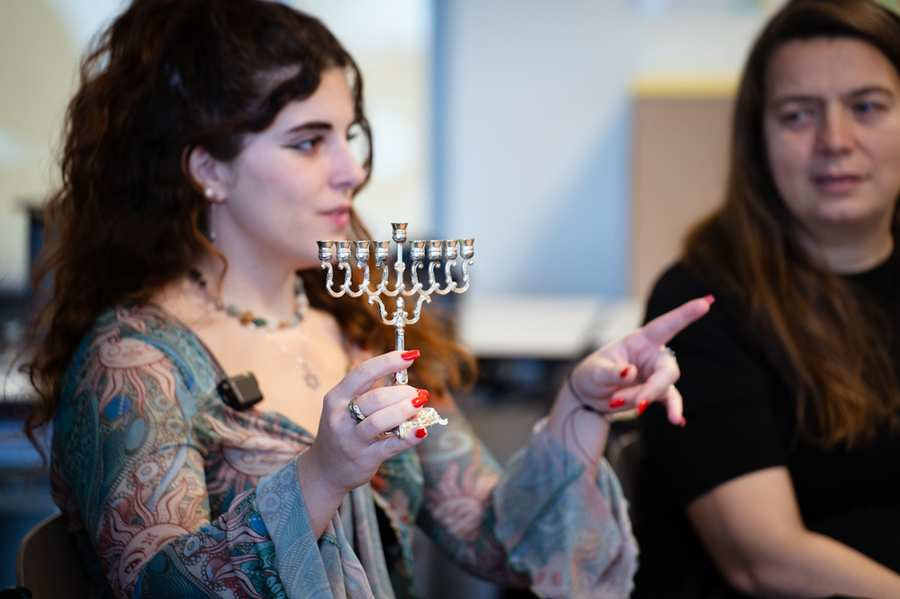
Das Jahr 2025 war für Likrat geprägt von intensiver Begegnungsarbeit, neuen Projekten und besonderen Highlights. Die Likratinos und Likratinas setzten ihren Einsatz für Dialog und gegenseitiges Verständnis fort und waren in ganz Österreich aktiv.
In der ersten Jahreshälfte fanden Seminare in Wien, Horn und Budapest statt, bei denen der Jahrgang 2025 seine Ausbildung abschloss und gezielt auf die bevorstehenden Begegnungen vorbereitet wurde. Diese intensiven Tage boten nicht nur Raum für professionelle und fundierte Workshops und Sessions, sondern förderten auch den Austausch untereinander und stärkten das Gemeinschaftsgefühl der Gruppe. Nach den Sommerferien starteten die neuen Likratinos und Likratinas mit ihren ersten Einsätzen und die Ausbildung des nächsten Jahrgangs 2026 begann. Mit über 40 Teilnehmerinnen und Teilnehmern ist es der größte Jahrgang, den Likrat Österreich bisher ausbildete – ein starkes Zeichen für das wachsende Interesse und Engagement für Dialogarbeit.

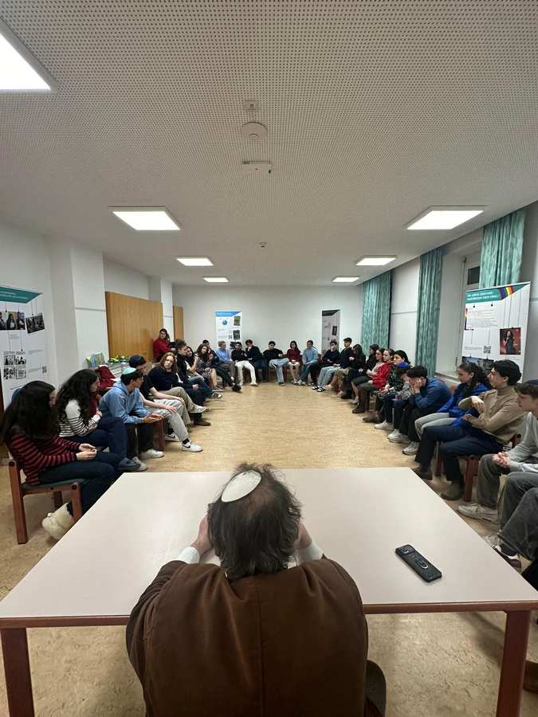
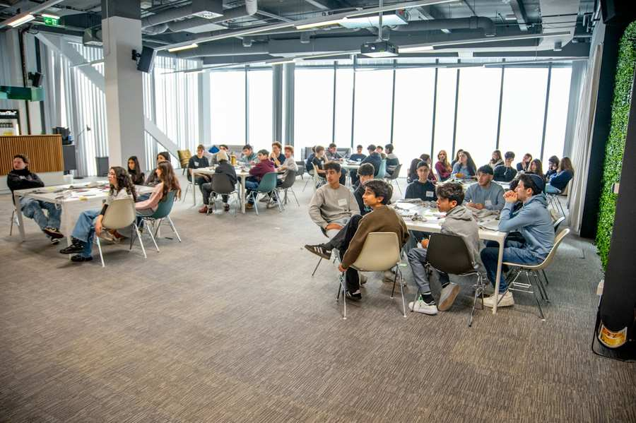
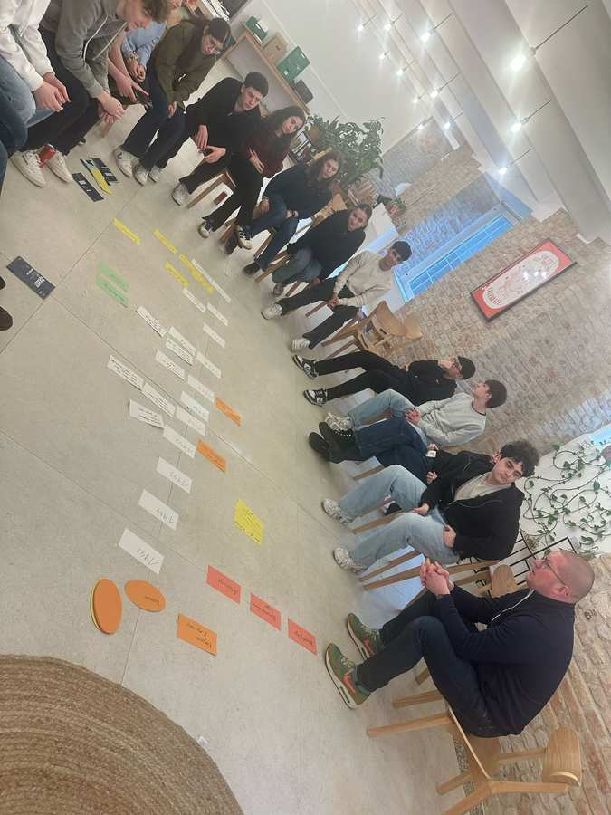
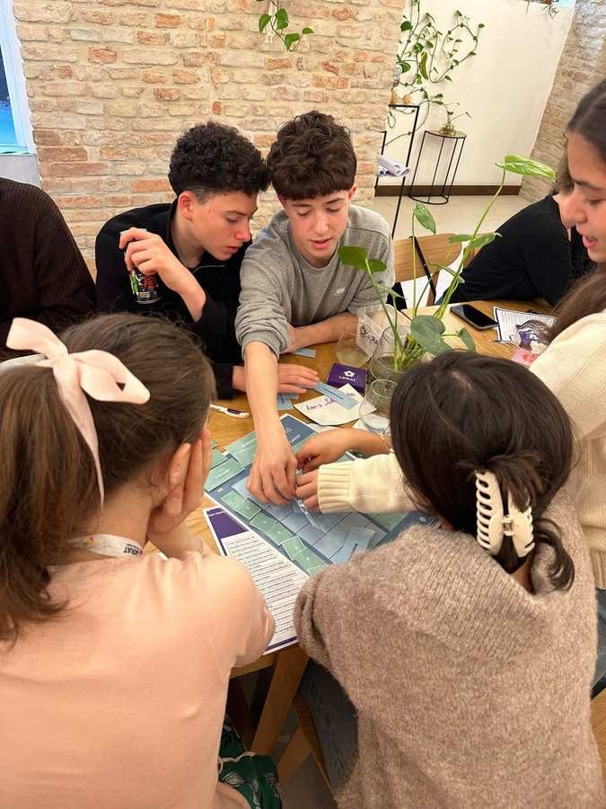
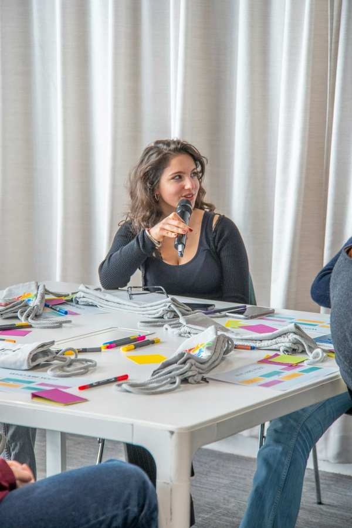
Viel Freude bereitete auch die Fortsetzung der Likrat-Kolumne, in der die Jugendlichen ihre Gedanken, Erfahrungen und persönlichen Einblicke in ihre Arbeit teilten. Zudem entstand mit dem Likrat Debate Club ein neues Format, das jungen Menschen Tools und Möglichkeiten gibt, gesellschaftlich relevante Themen zu reflektieren und dieses Wissen aktiv in Likrat-Einsätzen wiederzugeben.
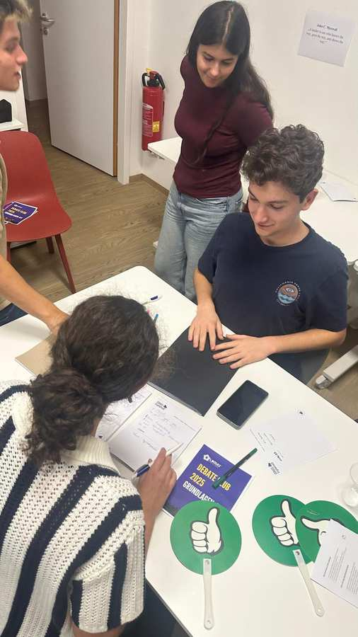
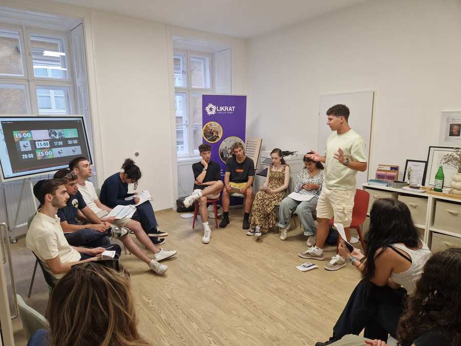
Ein weiterer bedeutender Moment waren die Begegnungen im Rahmen der Gedenkreise March of the Living in Polen, bei denen über 1.000 Schülerinnen und Schüler erreicht und zahlreiche wertvolle Gespräche geführt wurden – ein bewegender Beitrag zur Erinnerungskultur.
Ein besonderes Highlight des Jahres war das zehnjährige Jubiläum von Likrat in Österreich. Dieses Jubiläum machte die Entwicklung des Programms sichtbar und brachte Likratinos und Likratinas aus allen Generationen und Lehrgängen zusammen.
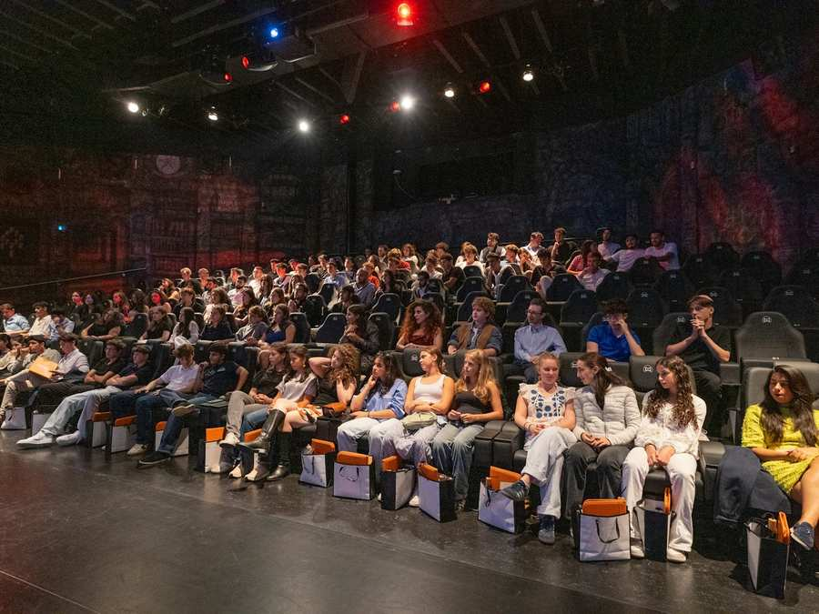
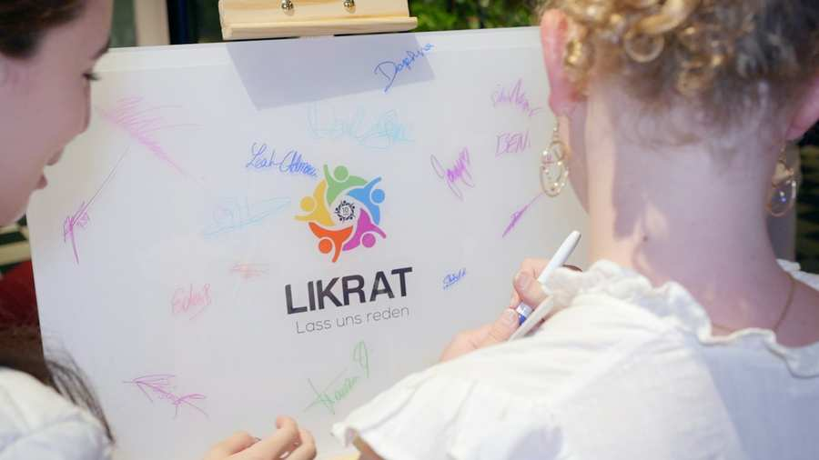
Darüber hinaus vertiefte Likrat seine bestehenden Kooperationen und wirkte auch an neuen Projekten mit: Die Mitarbeit an einer vom Bildungsministerium in Auftrag gegebenen Studie, die federführend durch das IKF gemeinsam mit vielen weiteren Partnern durchgeführt wurde, lieferte wichtige Impulse. Als Ergebnis entstand eine Handreichung als Leitfaden zum Umgang mit Antisemitismus an Schulen. Besonders hat uns dieses Jahr auch der Austausch mit Bundesminister Wiederkehr gefreut, bei dem Erfahrungen und Zukunftsperspektiven besprochen wurden.
Desweiteren waren LIKRAT und die IKG Wien auch Teil des BADRI-Konsortiums und arbeiteten gemeinsam mit dem European Jewish Congress und SACC by EJC an durch die Europäische Kommission geförderten Projekten zur Stärkung von Dialog, Bildung und Inklusion. Im April nahmen wir an der vom EJC organisierten internationalen Konferenz „Resilient Communities“ in Brüssel teil, bei der Vertreterinnen und Vertreter aus ganz Europa erfolgreiche Ansätze im interkulturellen Dialog und Strategien gegen Antisemitismus austauschten. Dabei präsentierte LIKRAT seine langjährige Arbeit als Best-Practice-Beispiel für Peer-to-Peer-Dialoge und nutzte die Konferenz zur Vertiefung bestehender sowie zum Aufbau neuer internationaler Kooperationen.
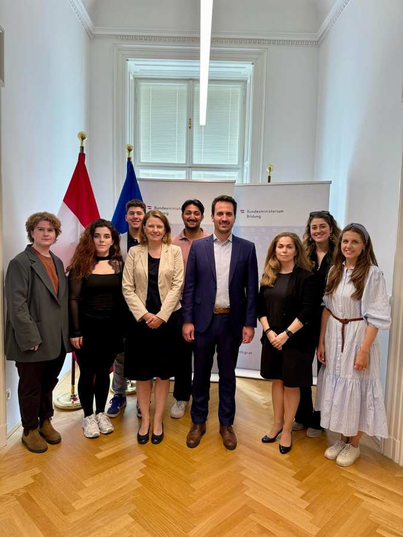
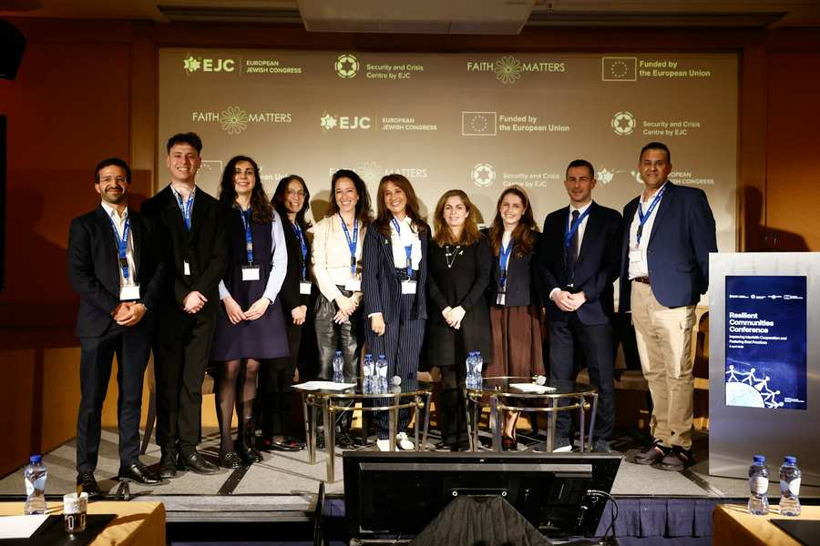
Zentral blieb wie immer der Kern der Arbeit: die Begegnungen. Im Jahr 2025 führte Likrat 186 Begegnungen durch und erreichte 4462 Dialogpartner- und partnerinnen. Jede einzelne Begegnung zeigt, wie wichtig persönlicher Austausch für ein respektvolles Miteinander ist. Die Erlebnisse und Erfolge dieses Jahres geben Likrat neue Energie, um auch 2026 Brücken zu bauen und Dialog weiter voranzutreiben.
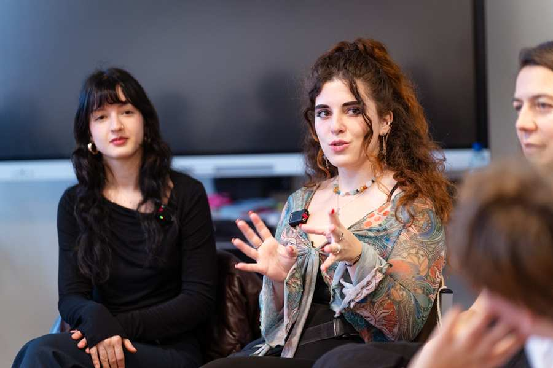
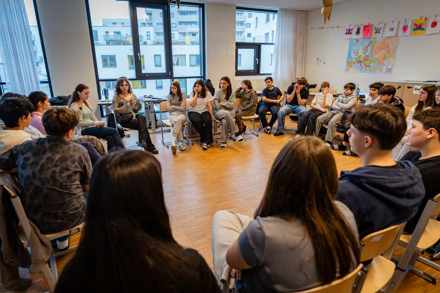
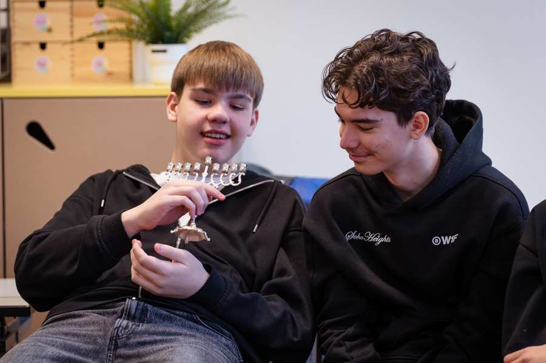